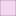
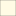

<!doctype html>
<html lang="en">
    <head>
        <meta charset="utf-8">
        <meta http-equiv="X-UA-Compatible" content="IE=edge">
        <meta name="viewport" content="initial-scale=1,user-scalable=no,maximum-scale=1,width=device-width">
        <meta name="mobile-web-app-capable" content="yes">
        <meta name="apple-mobile-web-app-capable" content="yes">
        <link rel="stylesheet" href="css/leaflet.css">
        <link rel="stylesheet" href="css/qgis2web.css"><link rel="stylesheet" href="css/fontawesome-all.min.css">
        <style>
        #map {
            width: 1245px;
            height: 852px;
        }
        </style>
        <title>Localització de la indústria química i dels denunciants sobre la problemàtica d'olors tòxiques.</title>
    </head>
    <body>
        <div id="map">
        </div>
        <script src="js/qgis2web_expressions.js"></script>
        <script src="js/leaflet.js"></script>
        <script src="js/leaflet.rotatedMarker.js"></script>
        <script src="js/leaflet.pattern.js"></script>
        <script src="js/leaflet-hash.js"></script>
        <script src="js/Autolinker.min.js"></script>
        <script src="js/rbush.min.js"></script>
        <script src="js/labelgun.min.js"></script>
        <script src="js/labels.js"></script>
        <script src="data/Municipis_0.js"></script>
        <script src="data/Polgonsindustrials_1.js"></script>
        <script src="data/Localitzaciempresesqumica_2.js"></script>
        <script src="data/Localitzaciodenunciants_3.js"></script>
        <script>
        var map = L.map('map', {
            zoomControl:true, maxZoom:28, minZoom:1
        }).fitBounds([[41.444520790285964,2.010397220889199],[41.611453536377525,2.332862833754342]]);
var BaseMapCarto = L.tileLayer('https://{s}.basemaps.cartocdn.com/rastertiles/voyager_labels_under/{z}/{x}/{y}{r}.png', {
        attribution: '&copy; <a href="http://www.openstreetmap.org/copyright">OpenStreetMap</a> &copy; <a href="https://carto.com/attributions">CARTO</a>',
        subdomains: 'abcd',
        maxZoom: 28}).addTo(map);        
var hash = new L.Hash(map);
        map.attributionControl.setPrefix('<a href="https://github.com/tomchadwin/qgis2web" target="_blank">qgis2web</a> &middot; <a href="https://leafletjs.com" title="A JS library for interactive maps">Leaflet</a> &middot; <a href="https://qgis.org">QGIS</a>');
        var autolinker = new Autolinker({truncate: {length: 30, location: 'smart'}});
        var bounds_group = new L.featureGroup([]);
        function setBounds() {
        }
        function pop_Municipis_0(feature, layer) {
            var popupContent = '<table>\
                    <tr>\
                        <th scope="row">C_Municipi</th>\
                        <td>' + (feature.properties['C_Municipi'] !== null ? autolinker.link(feature.properties['C_Municipi'].toLocaleString()) : '') + '</td>\
                    </tr>\
                    <tr>\
                        <th scope="row">Municipi</th>\
                        <td>' + (feature.properties['Municipi'] !== null ? autolinker.link(feature.properties['Municipi'].toLocaleString()) : '') + '</td>\
                    </tr>\
                </table>';
            layer.bindPopup(popupContent, {maxHeight: 400});
        }

        function style_Municipis_0_0() {
            return {
                pane: 'pane_Municipis_0',
                opacity: 1,
                color: 'rgba(35,35,35,1.0)',
                dashArray: '',
                lineCap: 'butt',
                lineJoin: 'miter',
                weight: 1.0, 
                fill: true,
                fillOpacity: 0.1,
                fillColor: 'rgba(255,244,179,1.0)',
                interactive: true,
            }
        }
        map.createPane('pane_Municipis_0');
        map.getPane('pane_Municipis_0').style.zIndex = 400;
        map.getPane('pane_Municipis_0').style['mix-blend-mode'] = 'normal';
        var layer_Municipis_0 = new L.geoJson(json_Municipis_0, {
            attribution: '',
            interactive: true,
            dataVar: 'json_Municipis_0',
            layerName: 'layer_Municipis_0',
            pane: 'pane_Municipis_0',
            onEachFeature: pop_Municipis_0,
            style: style_Municipis_0_0,
        });
        bounds_group.addLayer(layer_Municipis_0);
        map.addLayer(layer_Municipis_0);
        function pop_Polgonsindustrials_1(feature, layer) {
            var popupContent = '<table>\
                    <tr>\
                        <th scope="row">Nom</th>\
                        <td>' + (feature.properties['Nom'] !== null ? autolinker.link(feature.properties['Nom'].toLocaleString()) : '') + '</td>\
                    </tr>\
                    <tr>\
                        <th scope="row">Municipi</th>\
                        <td>' + (feature.properties['Municipi'] !== null ? autolinker.link(feature.properties['Municipi'].toLocaleString()) : '') + '</td>\
                    </tr>\
                    <tr>\
                        <th scope="row">Comarca</th>\
                        <td>' + (feature.properties['Comarca'] !== null ? autolinker.link(feature.properties['Comarca'].toLocaleString()) : '') + '</td>\
                    </tr>\
                    <tr>\
                        <th scope="row">Provincia</th>\
                        <td>' + (feature.properties['Provincia'] !== null ? autolinker.link(feature.properties['Provincia'].toLocaleString()) : '') + '</td>\
                    </tr>\
                    <tr>\
                        <th scope="row">Any</th>\
                        <td>' + (feature.properties['Any'] !== null ? autolinker.link(feature.properties['Any'].toLocaleString()) : '') + '</td>\
                    </tr>\
                </table>';
            layer.bindPopup(popupContent, {maxHeight: 400});
        }

        function style_Polgonsindustrials_1_0() {
            return {
                pane: 'pane_Polgonsindustrials_1',
                opacity: 1,
                color: 'rgba(35,35,35,1.0)',
                dashArray: '',
                lineCap: 'butt',
                lineJoin: 'miter',
                weight: 1.0, 
                fill: true,
                fillOpacity: 0.2,
                fillColor: 'rgba(218,123,206,1.0)',
                interactive: true,
            }
        }
        map.createPane('pane_Polgonsindustrials_1');
        map.getPane('pane_Polgonsindustrials_1').style.zIndex = 401;
        map.getPane('pane_Polgonsindustrials_1').style['mix-blend-mode'] = 'normal';
        var layer_Polgonsindustrials_1 = new L.geoJson(json_Polgonsindustrials_1, {
            attribution: '',
            interactive: true,
            dataVar: 'json_Polgonsindustrials_1',
            layerName: 'layer_Polgonsindustrials_1',
            pane: 'pane_Polgonsindustrials_1',
            onEachFeature: pop_Polgonsindustrials_1,
            style: style_Polgonsindustrials_1_0,
        });
        bounds_group.addLayer(layer_Polgonsindustrials_1);
        map.addLayer(layer_Polgonsindustrials_1);
        function pop_Localitzaciempresesqumica_2(feature, layer) {
            var popupContent = '<table>\
                    <tr>\
                        <th scope="row">NIF</th>\
                        <td>' + (feature.properties['NIF'] !== null ? autolinker.link(feature.properties['NIF'].toLocaleString()) : '') + '</td>\
                    </tr>\
                    <tr>\
                        <th scope="row">Nom fiscal</th>\
                        <td>' + (feature.properties['Nom fiscal'] !== null ? autolinker.link(feature.properties['Nom fiscal'].toLocaleString()) : '') + '</td>\
                    </tr>\
                    <tr>\
                        <th scope="row">Població</th>\
                        <td>' + (feature.properties['Població'] !== null ? autolinker.link(feature.properties['Població'].toLocaleString()) : '') + '</td>\
                    </tr>\
                    <tr>\
                        <th scope="row">CCAE</th>\
                        <td>' + (feature.properties['CCAE'] !== null ? autolinker.link(feature.properties['CCAE'].toLocaleString()) : '') + '</td>\
                    </tr>\
                    <tr>\
                        <th scope="row">Descripcio</th>\
                        <td>' + (feature.properties['Descripcio'] !== null ? autolinker.link(feature.properties['Descripcio'].toLocaleString()) : '') + '</td>\
                    </tr>\
                </table>';
            layer.bindPopup(popupContent, {maxHeight: 400});
        }

        function style_Localitzaciempresesqumica_2_0() {
            return {
                pane: 'pane_Localitzaciempresesqumica_2',
                radius: 4.0,
                opacity: 1,
                color: 'rgba(35,35,35,1.0)',
                dashArray: '',
                lineCap: 'butt',
                lineJoin: 'miter',
                weight: 1,
                fill: true,
                fillOpacity: 1,
                fillColor: 'rgba(255,235,11,1.0)',
                interactive: true,
            }
        }
        map.createPane('pane_Localitzaciempresesqumica_2');
        map.getPane('pane_Localitzaciempresesqumica_2').style.zIndex = 402;
        map.getPane('pane_Localitzaciempresesqumica_2').style['mix-blend-mode'] = 'normal';
        var layer_Localitzaciempresesqumica_2 = new L.geoJson(json_Localitzaciempresesqumica_2, {
            attribution: '',
            interactive: true,
            dataVar: 'json_Localitzaciempresesqumica_2',
            layerName: 'layer_Localitzaciempresesqumica_2',
            pane: 'pane_Localitzaciempresesqumica_2',
            onEachFeature: pop_Localitzaciempresesqumica_2,
            pointToLayer: function (feature, latlng) {
                var context = {
                    feature: feature,
                    variables: {}
                };
                return L.circleMarker(latlng, style_Localitzaciempresesqumica_2_0(feature));
            },
        });
        bounds_group.addLayer(layer_Localitzaciempresesqumica_2);
        map.addLayer(layer_Localitzaciempresesqumica_2);
        function pop_Localitzaciodenunciants_3(feature, layer) {
            var popupContent = '<table>\
                    <tr>\
                        <th scope="row">Denunciant</th>\
                        <td>' + (feature.properties['Denunciant'] !== null ? autolinker.link(feature.properties['Denunciant'].toLocaleString()) : '') + '</td>\
                    </tr>\
                    <tr>\
                        <th scope="row">Domicili</th>\
                        <td>' + (feature.properties['Domicili'] !== null ? autolinker.link(feature.properties['Domicili'].toLocaleString()) : '') + '</td>\
                    </tr>\
                    <tr>\
                        <th scope="row">Municipi</th>\
                        <td>' + (feature.properties['Municipi'] !== null ? autolinker.link(feature.properties['Municipi'].toLocaleString()) : '') + '</td>\
                    </tr>\
                </table>';
            layer.bindPopup(popupContent, {maxHeight: 400});
        }

        function style_Localitzaciodenunciants_3_0() {
            return {
                pane: 'pane_Localitzaciodenunciants_3',
                radius: 4.0,
                opacity: 1,
                color: 'rgba(35,35,35,1.0)',
                dashArray: '',
                lineCap: 'butt',
                lineJoin: 'miter',
                weight: 1,
                fill: true,
                fillOpacity: 1,
                fillColor: 'rgba(255,0,0,1.0)',
                interactive: true,
            }
        }
        map.createPane('pane_Localitzaciodenunciants_3');
        map.getPane('pane_Localitzaciodenunciants_3').style.zIndex = 403;
        map.getPane('pane_Localitzaciodenunciants_3').style['mix-blend-mode'] = 'normal';
        var layer_Localitzaciodenunciants_3 = new L.geoJson(json_Localitzaciodenunciants_3, {
            attribution: '',
            interactive: true,
            dataVar: 'json_Localitzaciodenunciants_3',
            layerName: 'layer_Localitzaciodenunciants_3',
            pane: 'pane_Localitzaciodenunciants_3',
            onEachFeature: pop_Localitzaciodenunciants_3,
            pointToLayer: function (feature, latlng) {
                var context = {
                    feature: feature,
                    variables: {}
                };
                return L.circleMarker(latlng, style_Localitzaciodenunciants_3_0(feature));
            },
        });
        bounds_group.addLayer(layer_Localitzaciodenunciants_3);
        map.addLayer(layer_Localitzaciodenunciants_3);
            var title = new L.Control();
            title.onAdd = function (map) {
                this._div = L.DomUtil.create('div', 'info');
                this.update();
                return this._div;
            };
            title.update = function () {
                this._div.innerHTML = '<h2>Localització de la indústria química i dels denunciants sobre la problemàtica d\'olors tòxiques.</h2>';
            };
            title.addTo(map);
        var baseMaps = {};
        L.control.layers(baseMaps,{' Localitzacio denunciants': layer_Localitzaciodenunciants_3,' Localització empreses química': layer_Localitzaciempresesqumica_2,' Polígons industrials': layer_Polgonsindustrials_1,' Municipis': layer_Municipis_0,},{collapsed:false}).addTo(map);
        setBounds();
        </script>
    </body>
</html>
